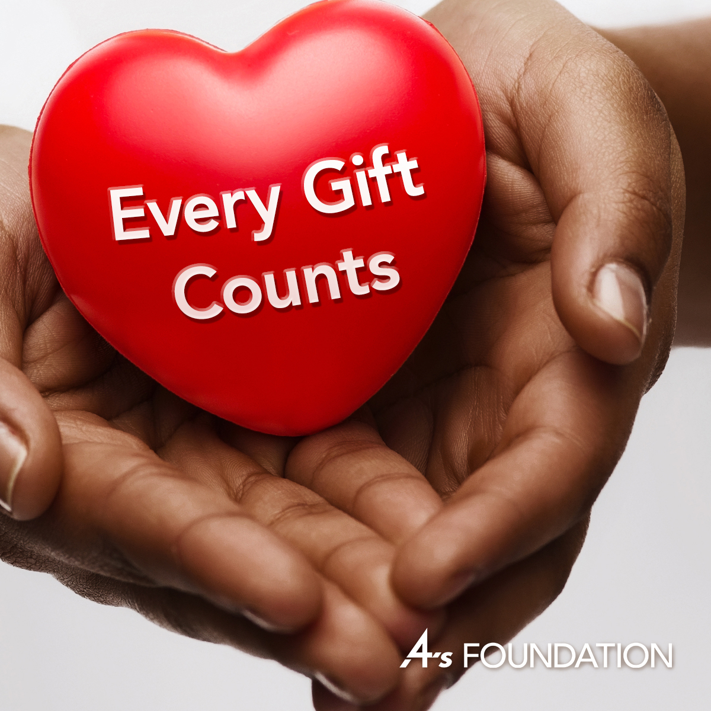
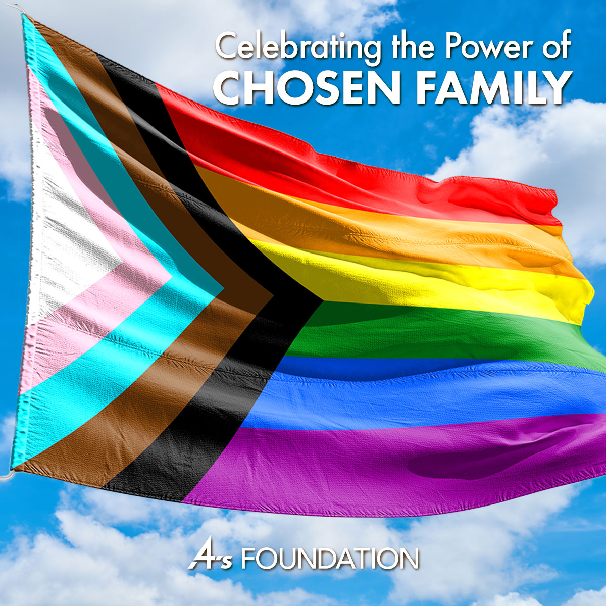
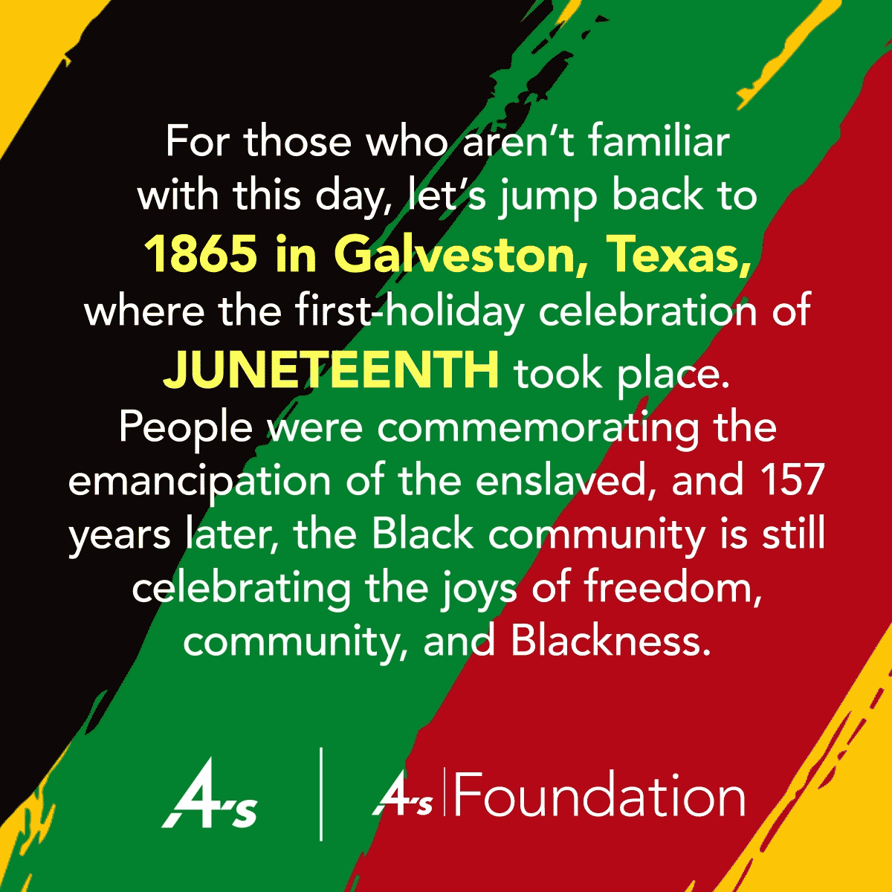
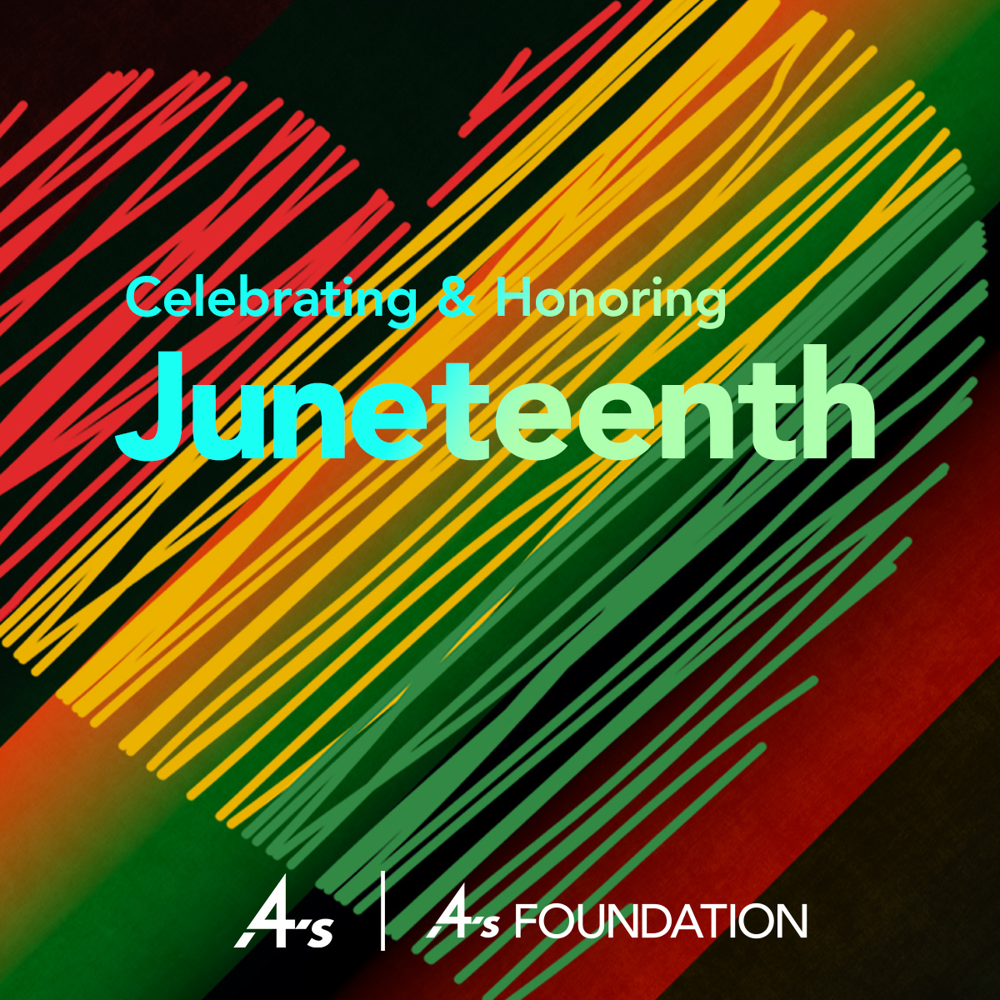
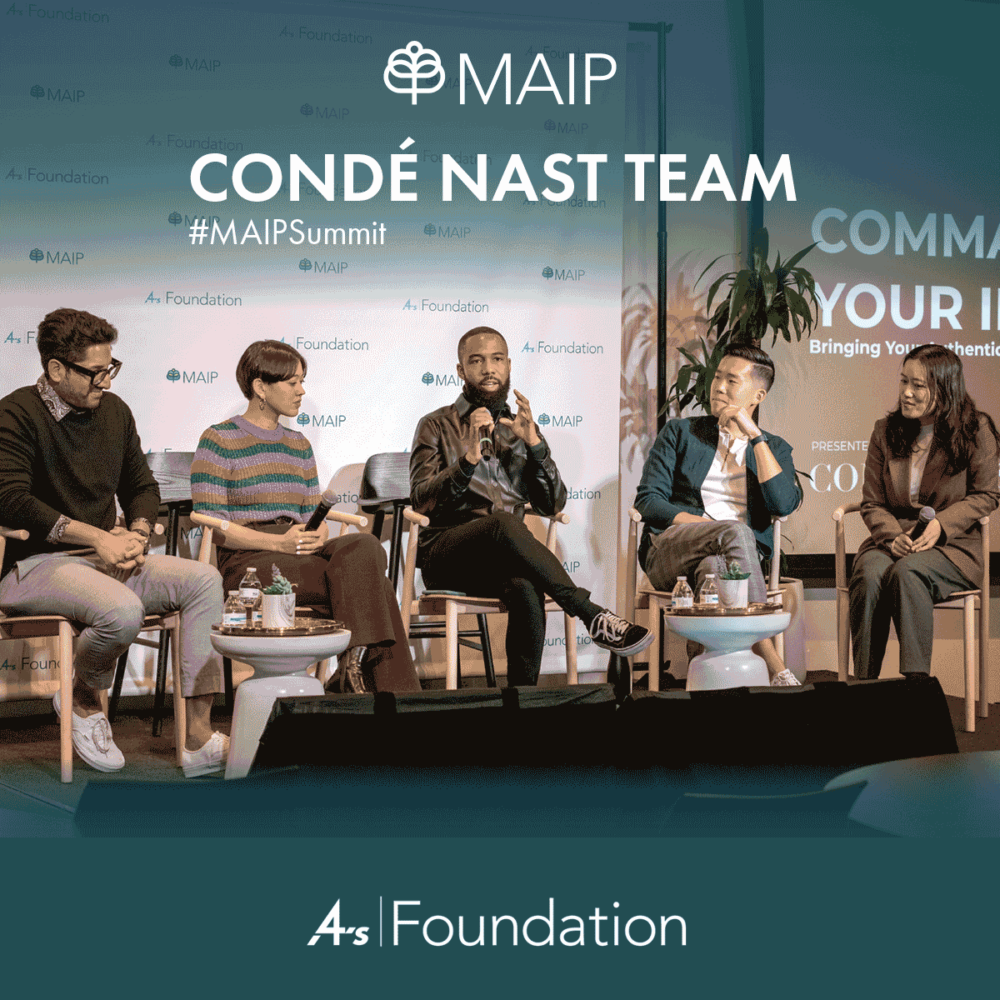
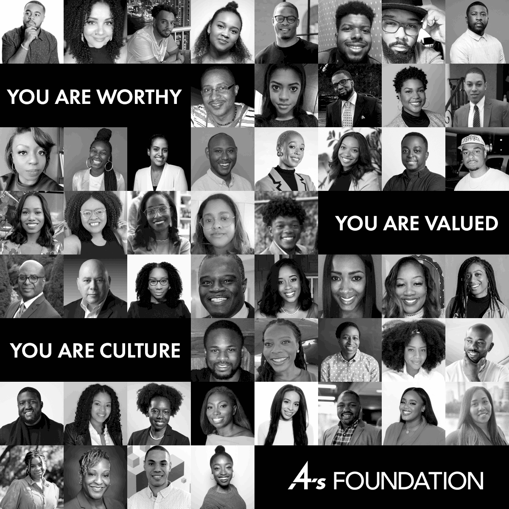
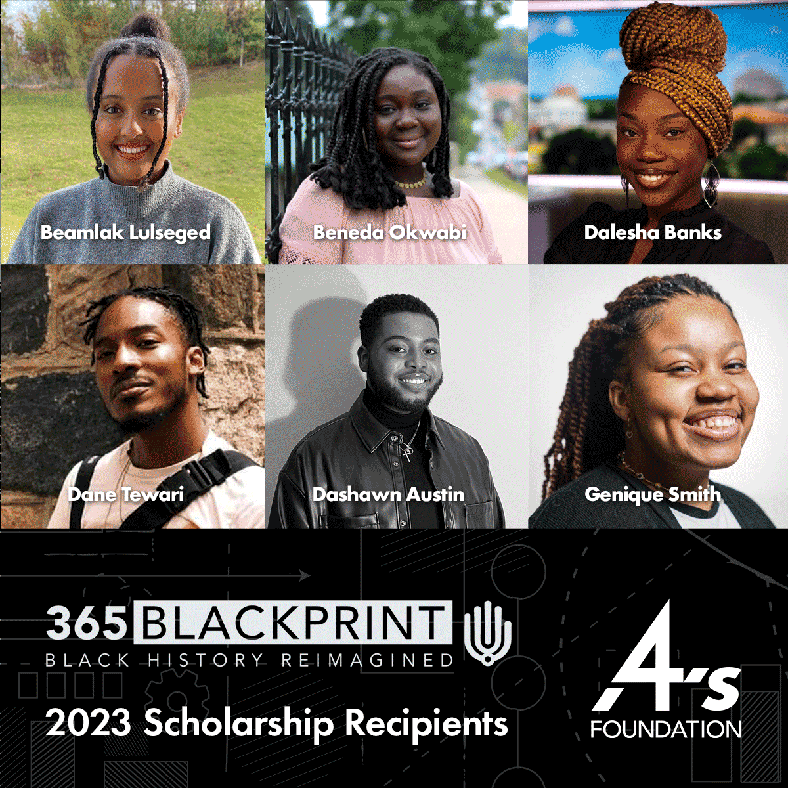
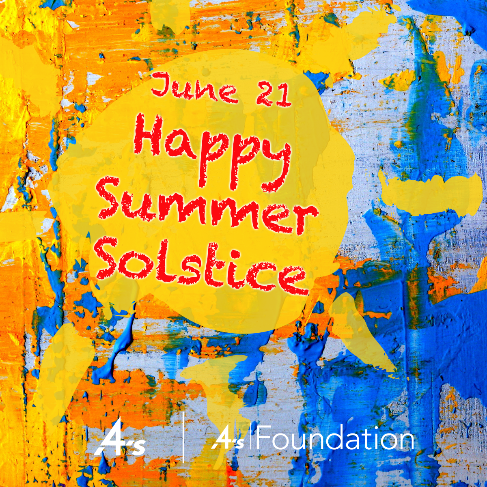

概述：每一份捐贈都至關重要年終活動
重點：招攬捐贈者的宣傳設計
交付：社群媒體
概述：婦女歷史月活動
重點：創作插圖以支持故事敘述
交付：多個社群平台的多媒體檔案
概述：阿拉伯文化月宣傳
重點：動態版面設計
交付：社群媒體素材

概述：驕傲月活動
重點：醒目突出的驕傲主題版面
交付：多個社群媒體素材
概述：基金會DEI線上研討會
重點：版面及動態設計、“標籤標記
交付：社群媒體素材

概述： 六月節活動
重點：支持紀念與教育的版面設計
交付：社群媒體素材

概述：慶祝六月節
重點：六月節版面設計
交付：社群媒體素材
概述：Google人才社交活動
重點：設計以社區支援為主的訊息
交付：社群媒體素材
概述：Google職業證書社交推廣活動
重點：設計清晰易懂的教育訊息
交付：社群媒體素材

概述：MAIP AAPI 活動
重點：支持紀念和教育訊息
交付：社群媒體素材
概述：歡迎研究員社交活動
重點：以新研究員為主題的設計
交付：適合多個社群平台的多媒體檔案

概述：黑人歷史月活動
重點：支援教育訊息的宣傳
交付：社群媒體素材
概述：馬丁路德金恩紀念日宣傳活動
重點：設計清晰訊息的版面。
交付：多個社群平台的多媒體檔案

概述：獎學金公告社交宣傳活動
重點：清晰易懂方便的傳遞版面設計
交付：社群媒體素材

概述：夏至快樂活動
重點：慶祝版面設計
交付：社群媒體素材